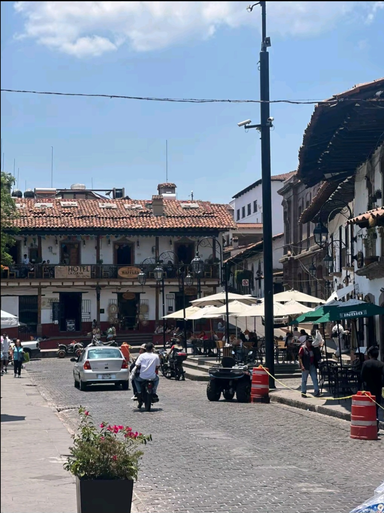
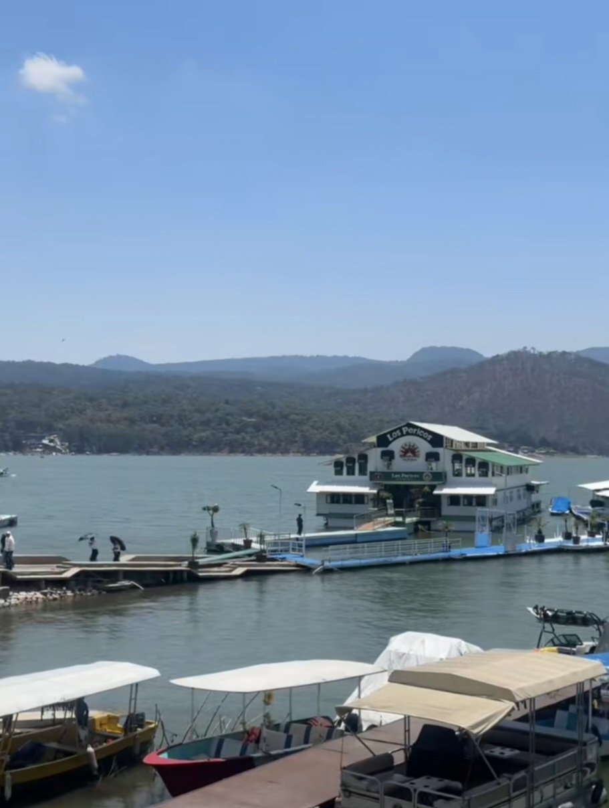
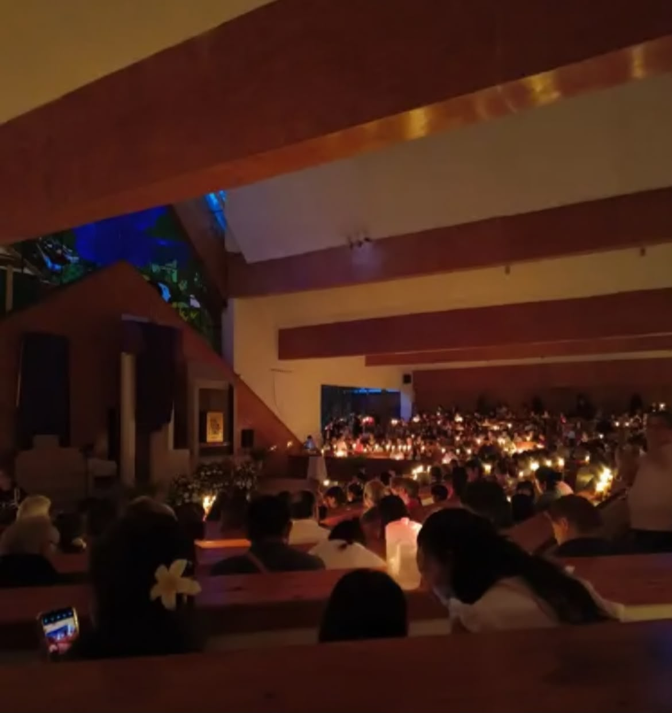
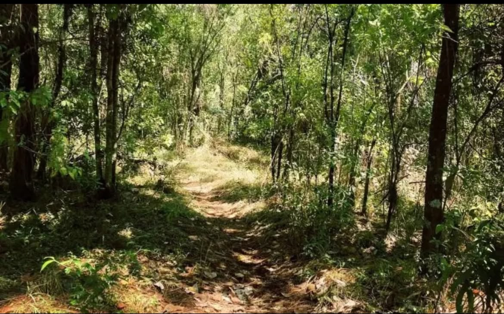

Un pedazito de nuestro municipio
Valle de Bravo, donde la naturaleza, la historia y la tradicion se unen para crear un lugar magico.
El Embarcadero
Este es el Embarcadero Municipal de Valle de Bravo es uno de los principales atractivos turisticos en las orillas de la presa Miguel Alemán (lago de Valle de Bravo). se encuentraen la avenida Fray Gregorio Jimenez de la cuenca, en la zona de la estrella, cerca del centro de Vale de Bravo. Estado de Mexico.
El embarcadero es importante porque representa uno de los principales puntos de actividad turistica y economica de Valle de Bravo. Gracias e el, muchas personas pueden conocer el lago y disfrutar de diferentes actividdes recreativas."

Kiosco de Valle de Bravo
Se ve el centro de Valle de Bravo el cual se ve rodeado de gente del pueblo al igual que turistas en una de las zonas mas bonitas por su rapido acceso y ubicacion.
Se encuentra en el Jardin Central,tambien conocido como Plaza de la Independencia, y es un punnto de reunion para los habitantes y turistas que visitan este Pueblo Magico, esta a un costado de la Parroquia de San Francisco de Asis y rodeado por los tradicionales portales

Iglesia central de Valle de Bravo
Muestra la Parroquia de San Francisco de Asis es uno de los edificios religiosos mas imprortantes y representativos de Valle de Bravo, se encuentra en el centro de Valle de Bravo la iglesia mas cercana del centro ya que se encuentra a un lado del Jardin central y esta dedicada a San francisco de Asis, considerado el santo patrono del municipio, se encuentra en la calle 5 de Febrero, en el centro de Valle de Bravo, Estado de Mexio, por lo mismo es una de las parroquias de valle de Bravo mas recurrida y turistica.

Restaurante Pericos
Los Pericos es uno de los establecimientos mas tradicionales y conocidos de Valle de Bravo. Es famoso por ser el primer restaurante flotante del lago y ofrecer a sus visitantes una experiencia gastronomica sobre el agua.
Se encuentra en el Embarcadero Municipal, en Santa Maria Ahuacatlan, Valle de Bravo, Estado de Mexico, Disfruta del lago en el restaurante los pericos que se encuentra en la laguna de valle de bravo en el embarcadero disfrutando tambien de su rica comida y vistas

Iglesia de Avandaro
La Parroquia de Nuestra Senora de Fatima es un templo relogioso ubicado en Avandaro, Valle de Bravo, Estado de Mexico.
Se encuentra sobre la Avenida Rosales frente ala escuela primaria Rafael Ramirez, y es un punto de reunion para los habitantes de nuestra comunidad.
Muestra la arquitectura típica del pueblo con sus tradiciones y creencias religiosas hacia sus santos como la virgen de Guadalupe

Cerro Colorado
El Camino de Cerro Colorado se encuentra en la localidad de Cerro Colorado, perteneciente al municipio de Valle de Bravo, Estado de Mexico.
Es una via de acceso que conecta con esta comunidad y permite recorrerla rodeada de paisajes, naturaleza y vegetacion. Cerro colorado destaca por su enotrno natural. En esta region existen zonas boscosas con arboles de pino y oyamel, que forman parte de la riqueza hambiental del municipio. Se muestra el bosque de Cerro Colorado con sus caminos para senderismo y tambien para dar ciclismo la mayoria se usa para ir a rutas de ciclismo